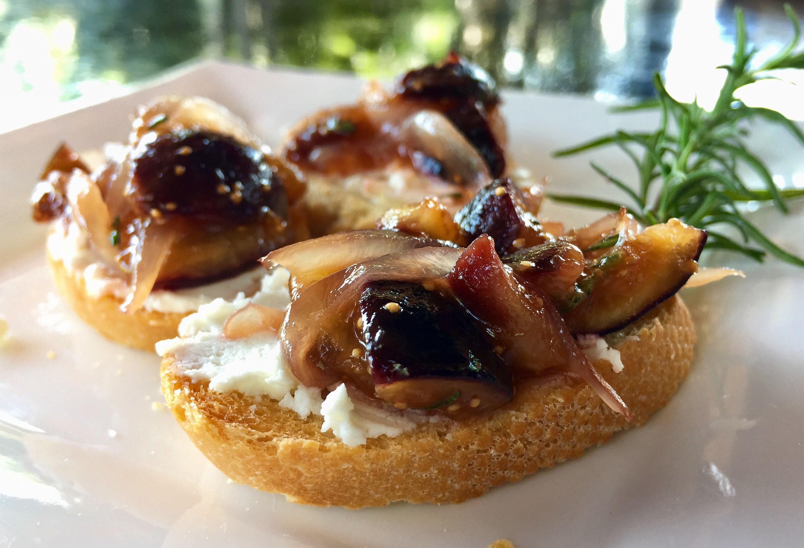

This is a picture of the finished product
Caramelized Onion Brochette
Ingredients
- Olive Oil: 1tbsp.
- Sprig of Fresh Thyme: 1
- Sliced French Bread: 12 slices
- Garlic Cloves: 6
- Extra Virgin Olive Oil: 1tbsp
- Pitted Olives; Halved: 6
- Salt and Pepper
Directions:
-
Heat the olive oil in a skillet over medium heat.
- Add the onion, thyme and a little salt and pepper.
- Cook until the onions begin to get soft.
- Turn the heat up a bit and cook until the onions turn golden brown.
- Adjust the salt and pepper to taste
-
Toast the bread on both sides within a toaster oven, in a broiler or on a grill.
- While the toast is still warm, rub with garlic and apply the EVOO to one side.
-
Place a half of a spoon of the caramelized onions on each slice of Brochette and top with a half olive.